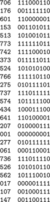
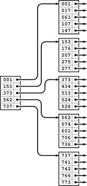
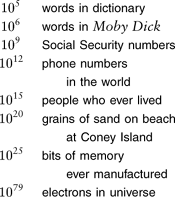

C++ Programming Robert Sedgewick - Princeton University Addison Wesley Professional Algorithms in C++, Parts 1–4: Fundamentals, Data Structure, Sorting, Searching, Third Edition
16.2. Indexed Sequential Access
A straightforward approach to building an index is to keep an array with keys and item references, in order of the keys, then to use binary search (see Section 12.4) to implement search. For N items, this method would require lg N probes—even for a huge file. Our basic model leads us immediately to consider two modifications to this simple method. First, the index itself is huge and will not fit on a single page, in general. Since we can access pages only through page references, we can build, instead, an explicit fully balanced binary tree with keys and page pointers in internal nodes, and with keys and item pointers in external nodes. Second, the cost of accessing M table entries is the same as the the cost of accessing 2, so we can use an M-ary tree for about the same cost per node as a binary tree. This improvement reduces the number of probes to be proportional to about logM N. As we saw in Chapters 10 and 15, we can regard this quantity to be constant for practical purposes. For example, if M is 1000, then logM N is less than 5 if N is less than 1 trillion.
Figure 16.1 gives a sample set of keys, and Figure 16.2 depicts an example of such a tree structure for those keys. We need to use relatively small values of M and N to keep our examples manageable; nevertheless, they illustrate that the trees for large M will be flat.
The keys (left) that we use in the examples in this chapter are 3-digit octal numbers, which we also interpret as 9-bit binary values (right).

In a sequential index, we keep the keys in sequential order in full pages (right), with an index directing us to the smallest key in each page (left). To add a key, we need to rebuild the data structure.

The tree depicted in Figure 16.2 is an abstract device-independent representation of an index that is similar to many other data structures that we have considered. Note that, in addition, it is not far removed from device- dependent indexes that might be found in low-level disk access software. For example, some early systems used a two-level scheme, where the bottom level corresponded to the items on the pages for a particular disk device, and the second level corresponded to a master index to the individual devices. In such systems, the master index was kept in main memory, so accessing an item with such an index required two disk accesses: one to get the index, and one to get the page containing the item. As disk capacity increases, so increases the size of the index, and several pages might be required to store the index, eventually leading to a hierarchical scheme like the one depicted in Figure 16.2. We shall continue working with an abstract representation, secure in the knowledge that it can be implemented directly with typical low-level system hardware and software.
Many modern systems use a similar tree structure to organize huge files as a sequence of disk pages. Such trees contain no keys, but they can efficiently support the commonly used operations of accessing the file in sequential order, and, if each node contains a count of its tree size, of finding the page containing the kth item in the file.
Historically, because it combines a sequential key organization with indexed access, the indexing method depicted in Figure 16.2 is called indexed sequential access. It is the method of choice for applications in which changes to the database are rare. We sometimes refer to the index itself as a directory. The disadvantage of using indexed sequential access is that modifying the directory is an expensive operation. For example, adding a single key can require rebuilding virtually the whole database, with new positions for many of the keys and new values for the indexes. To combat this defect and to provide for modest growth, early systems provided for overflow pages on disks and overflow space in pages, but such techniques ultimately were not very effective in dynamic situations (see Exercise 16.3). The methods that we consider in Sections 16.3 and 16.4 provide systematic and efficient alternatives to such ad hoc schemes.
Property 16.1. A search in an indexed sequential file requires only a constant number of probes, but an insertion can involve rebuilding the entire index|
We use the term constant loosely here (and throughout this chapter) to refer to a quantity that is proportional to logM N for large M. As we have discussed, this usage is justified for practical file sizes. Figure 16.3 gives more examples. Even if we were to have a 128-bit search key, capable of specifying the impossibly large number of 2128 different items, we could find an item with a given key in 13 probes, with 1000-way branching.
|
These generous upper bounds indicate that we can assume safely, for practical purposes, that we will never have a symbol table with more than 1030 items. Even in such an unrealistically huge database, we could find an item with a given key with less than 10 probes, if we did 1000-way branching. Even if we somehow found a way to store information on each electron in the universe, 1000-way branching would give us access to any particular item with less than 27 probes.

We will not consider implementations that search and construct indexes of this type, because they are special cases of the more general mechanisms that we consider in Section 16.3 (see Exercise 16.17 and Program 16.2).
Exercises |
 16.1 Tabulate the values of log M N, for M = 10, 100, and 1000 and N = 103, 104, 105, and 106.
16.1 Tabulate the values of log M N, for M = 10, 100, and 1000 and N = 103, 104, 105, and 106. | |
16.2 Draw an indexed sequential file structure for the keys 516, 177, 143, 632, 572, 161, 774, 470, 411, 706, 461, 612, 761, 474, 774, 635, 343, 461, 351, 430, 664, 127, 345, 171, and 357, for M = 5 and M = 6. | |
 16.3 Suppose that we build an indexed sequential file structure for N items in pages of capacity M, but leave k empty spaces in each page for expansion. Give a formula for the number of probes needed for a search, as a function of N, M, and k. Use the formula to determine the number of probes needed for a search when k = M/10, for M = 10, 100, and 1000 and N = 103, 104, 105, and 106
16.3 Suppose that we build an indexed sequential file structure for N items in pages of capacity M, but leave k empty spaces in each page for expansion. Give a formula for the number of probes needed for a search, as a function of N, M, and k. Use the formula to determine the number of probes needed for a search when k = M/10, for M = 10, 100, and 1000 and N = 103, 104, 105, and 106 | |
16.4 Suppose that the cost of a probe is about αtime units, and that the average cost of finding an item in a page is about β M time units. Find the value of M that minimizes the cost for a search in an indexed sequential file structure, for α/β = 10, 100, and 1000 and N = 103, 104, 105, and 106. |
|